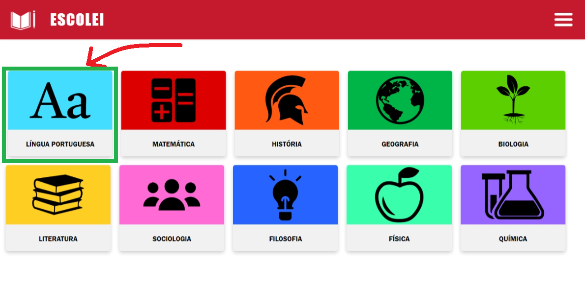
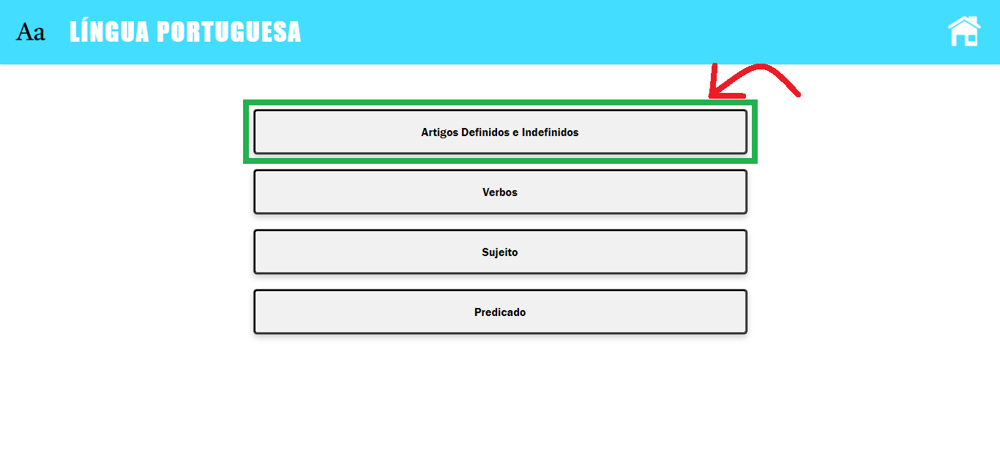
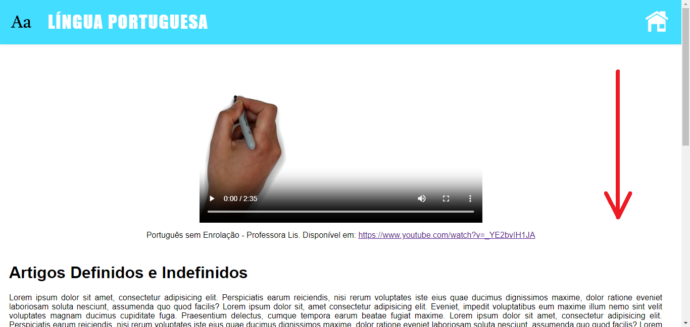
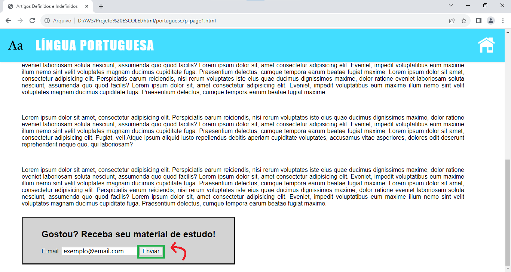

Para receber os materiais de estudo de cada tópico estudado, o procedimento é bem simples. Siga os passos abaixo para conseguir os materiais de estudo.
Primeiramente, escolha a matéria a qual está estudando. Você pode escolher entre Língua Portuguesa, Matemática, História, Geografia, Biologia, Literatura, Sociologia, Filosofia, Física ou Química. Cada matéria possui assuntos e tópicos próprios. Basta clicar no ícone da matéria desejada.
Alguns assuntos possuem vários tópicos. Selecione de qual assunto ou tópico desse assunto deseja obter os materiais de estudo.
Depois de assitir à videoaula e ler a matéria disponibilizada pelo professor, no final da página você irá encontrar um campo para receber os materiais de estudo.
Após preencher o campo de e-mail com o e-mail no qual deseja que os materiais sejam enviados, clique no botão "Enviar" e aguarde o recebimento do e-mail. Não esqueça de olhar na lixeira e Spam!
Você receberá um arquivo ".zip" com todos os materiais de estudo daque tópico ou assunto. Basta baixar e descompactar o arquivo para ter acesso a eles. Bons estudos!